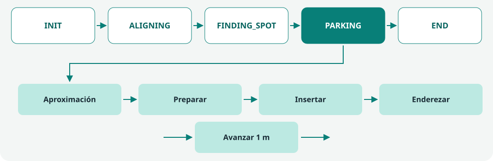
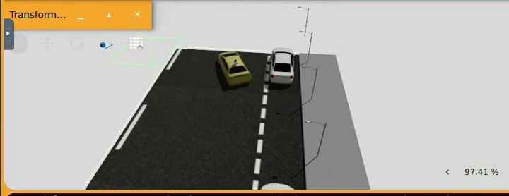
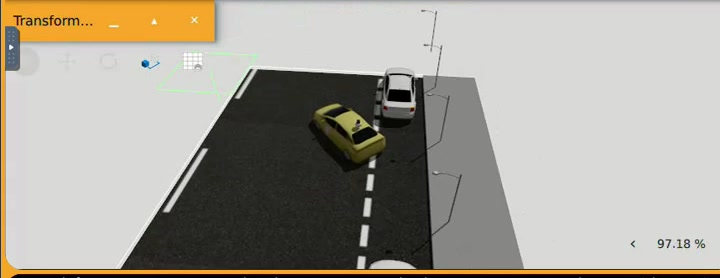
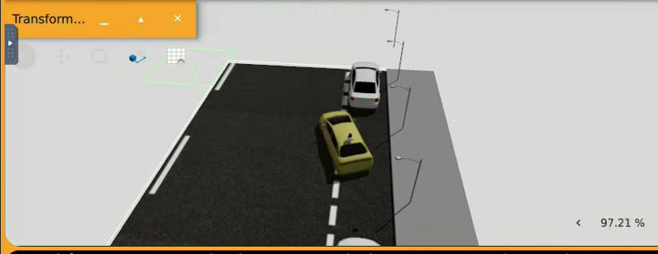

Programación de un coche autónomo con dinámica Ackermann.
Desarrollo de la práctica
En esta práctica se combina la información del LiDAR, utilizada para identificar los obstáculos y detectar el espacio libre, con la odometría, que permite estimar el desplazamiento y la orientación del vehículo. También se habilita la visualización de la nube de puntos, que facilita la comparación entre la percepción del algoritmo y Gazebo, permitiendo analizar los errores de detección y ejecución de la maniobra.
El programa se estructura mediante una máquina de estados: Init, Alineamiento, Búsqueda, Maniobra de aparcamiento y Detención del coche. La etapa de maniobra también se divide en subetapas (preparación de la entrada, inserción marcha atrás y enderezado), lo que permite ajustar cada fase de forma independiente.
Organización del código y máquina de estados
El código se ha estructurado en 3 ficheros distintos:
Fichero
Responsabilidad
code.py
Programa principal. Lee los sensores, ejecuta el estado actual, gestiona las transiciones y aplica los comandos de movimiento al coche.
alignment.py
Transforma y filtra los puntos del LiDAR, estima la referencia lateral y calcula los errores de distancia y orientación.
parking.py
Mide el espacio libre, mantiene el hueco candidato y ejecuta las fases de aparcamiento.
En el fichero code.py es donde se desarrolla la máquina de estados, que se divide en las siguientes etapas:

Fases de la práctica.
Estado
Acción
INIT
Busca una referencia de la fila de coches y acumula cuatro estimaciones válidas antes de pasar al alineamiento.
ALIGNING
Corrige distancia y orientación hasta mantener ambos errores dentro de tolerancia durante seis lecturas.
FINDING_SPOT
Sigue la fila, mide el espacio a la derecha, confirma un hueco y avanza hasta dejar su centro detrás.
PARKING
Completa la aproximación al punto de entrada y llama a park() en cada iteración, que contiene las subetapas de maniobra.
END
Mantiene el coche parado después de que la maniobra confirme su posición y orientación finales.
Procesamiento del LiDAR
El LiDAR proporciona una nube de puntos que representa las superficies observadas en el entorno, sin identificar directamente los objetos. Por ello, para
utilizar esta información en el alineamiento y la detección de huecos, se realiza un procesamiento previo que incluye
la validación de las coordenadas, la transformación al sistema del vehículo y el filtrado de los puntos.
Los puntos azules representan todos los puntos del LiDAR y los rojos, los puntos filtrados por el código.
En primer lugar, se descartan los puntos que contienen coordenadas infinitas o NaN. A continuación, cada punto se
transforma desde el sistema de referencia del sensor al del vehículo mediante una rotación y una traslación que
consideran la orientación y la posición estimada del LiDAR, puesto que se encuentra en la parte trasera del coche.
Obtieniendo el siguiente sistema en el que: el eje x corresponde a la dirección longitudinal, el eje y a la dirección lateral y el eje z a la altura. Los puntos situados a la derecha del vehículo presentan valores negativos de y.
x_coche = SENSOR_X + cos(SENSOR_YAW) * x - sin(SENSOR_YAW) * y
y_coche = SENSOR_Y + sin(SENSOR_YAW) * x + cos(SENSOR_YAW) * y
z_coche = SENSOR_Z + z
El filtrado elimina los puntos asociados al propio vehículo y restringe el intervalo de alturas considerado para
los obstáculos, para eliminar ruido. La estimación de la fila se realiza sobre la sublista de puntos válidos,
mientras que la comprobación de visibilidad utiliza una nube más densa que conserva los puntos del suelo. Estos
puntos permiten determinar si los rayos del sensor han atravesado la región lateral de interés, sin clasificarlos
como obstáculos.
Etapas INIT y ALIGNING: reconocer la fila y colocarse paralelo
El alineamiento busca situar el vehículo paralelo a la fila de coches y mantener una separación lateral adecuada antes de buscar una plaza. Para ello, primero se estima una recta que representa la fila vista desde arriba. Después, esa referencia se utiliza para calcular los errores de distancia y orientación y generar los comandos de movimiento.
Estimación de la fila en fit_side_line()
La referencia se obtiene mediante dos ajustes sucesivos. Una estimación inicial basada en medianas permite seleccionar los puntos próximos a la fila. A continuación, mínimos cuadrados calcula una recta más precisa a partir de esos puntos de soporte. Todo el proceso se realiza en el plano x–y del vehículo, una vez transformados los puntos del LiDAR.
1. Selección de la región lateral
Se consideran puntos situados a la derecha del coche, en la región donde se espera encontrar los vehículos aparcados. El código restringe su posición longitudinal entre −4 y 12 m, su distancia lateral entre 0,8 y 9 m y su altura a un máximo de 1,55 m. Esta selección reduce los datos que participan en la estimación, aunque por sí sola no identifica qué puntos pertenecen a cada objeto.
2. Agrupación y mediana lateral
Los puntos se agrupan en intervalos longitudinales de 0,5 m. Cada intervalo se representa mediante su centro y la mediana lateral, reduciendo la influencia de puntos aislados.
3. Estimación de la primera recta
La pendiente inicial es la mediana de las pendientes entre parejas de representantes. El término independiente se obtiene con la mediana de y − m · x. Esta recta permite seleccionar los puntos que se utilizarán en el ajuste final.
4. Selección de los puntos de soporte
Se conservan los puntos cuya desviación lateral respecto a la recta inicial no supera 0,16 m. Esta diferencia se mide en el eje y y permite descartar puntos alejados antes del ajuste final.
desviacion_lateral = abs(y - (m_inicial * x + b_inicial))
if desviacion_lateral <= 0.16:
inliers.append(punto)
5. Refinamiento mediante mínimos cuadrados
Con los puntos aceptados se calcula la recta que minimiza la suma de las desviaciones laterales al cuadrado. A partir de las medias de sus coordenadas se obtienen la pendiente y el término independiente:
m = suma((x - x_media) * (y - y_media)) / suma((x - x_media) ** 2)
b = y_media - m * x_media
Las medianas aportan una primera estimación menos sensible a puntos aislados. Mínimos cuadrados refina después la recta utilizando los puntos seleccionados.
Validación y fijación de la referencia en INIT
El programa comprueba que el ajuste tenga soporte suficiente. Antes de calcular la recta exige al menos seis intervalos longitudinales y una extensión de 4 m entre sus representantes. Después de seleccionar los puntos de soporte, exige al menos 30 puntos repartidos en seis intervalos. Si estas condiciones no se cumplen, se descarta la estimación de esa lectura.
La recta final se expresa mediante una normal de longitud unitaria y un desplazamiento. Para la expresión y = m · x + b, una representación equivalente es:
normal_x = -m / sqrt(1 + m ** 2)
normal_y = 1 / sqrt(1 + m ** 2)
offset = -b / sqrt(1 + m ** 2)
normal_x * x + normal_y * y + offset = 0
En el código se ajusta el signo de la normal y del desplazamiento para mantener una orientación coherente. La normal unitaria permite calcular la distancia a la recta, mientras que su dirección permite obtener la orientación de la fila. Aunque en la vista tridimensional se perciban superficies verticales, la referencia utilizada por el controlador es una recta en planta.
En INIT se acumulan cuatro estimaciones válidas consecutivas. Cada una se transforma al sistema de referencia de la pose inicial usando la odometría, de modo que pueden promediarse aunque el coche se haya desplazado entre lecturas. La normal media se vuelve a normalizar para obtener la referencia que utilizará el alineamiento. Si una lectura no aporta una estimación válida, se reinicia la acumulación.
Mientras no haya una referencia válida, el vehículo puede avanzar lentamente hasta el límite de búsqueda configurado o detenerse si detecta un obstáculo frontal. La validez geométrica del ajuste no garantiza por sí sola que se haya seleccionado la fila correcta. Durante las pruebas también fue necesario comprobar que la distancia obtenida fuera coherente con los coches y no con las farolas.
Control de distancia y orientación en ALIGNING
Una vez fijada la referencia, la pose actual se expresa en el sistema inicial para calcular la distancia del coche a la recta. El objetivo es situar el centro del vehículo a 2 m de esa referencia. Para una anchura de 2,10 m, esta distancia corresponde aproximadamente a una separación de 0,95 m entre el lateral del coche y la recta.
El controlador utiliza un error lateral y un error de rumbo. El primero es la diferencia entre la distancia actual y la deseada. El segundo es la diferencia angular entre la orientación actual y una dirección paralela a la fila, escogiendo el sentido más próximo al del vehículo. Los ángulos se normalizan para evitar discontinuidades al pasar entre −π y π.
El término proporcional corrige la separación lateral y el término de rumbo orienta el coche en paralelo. La derivada introduce una corrección según la variación del error lateral. El término integral permanece desactivado con K_I = 0. La curvatura se limita mediante el ángulo máximo de dirección y la distancia entre ejes, y la velocidad se reduce cuando aparece un obstáculo frontal.
El alineamiento se acepta cuando el error lateral es inferior a 0,10 m y el error angular es inferior a 3° durante seis lecturas consecutivas. Mientras ambos errores cumplen esas condiciones, el coche se mantiene detenido para confirmar la estabilidad. Si dejan de cumplirse, se reinicia el contador y continúa la corrección. Al completar la confirmación se pasa a FINDING_SPOT.
Etapa FINDING_SPOT: medir un hueco a la derecha
Separar ocupado, libre y sin datos
La detección de huecos trabaja sobre una franja lateral fija en coordenadas del coche, sin depender de la recta estimada para alinearse. Se comprueba una zona que empieza a 1,75 m a la derecha y tiene 2,6 m de profundidad. Los puntos asociados a posibles obstáculos se filtran por altura y se cuentan por intervalos longitudinales de 0,25 m.
La ausencia de posibles obstáculos detectados no basta para declarar libre una zona. Se comprueba qué rayos del LiDAR atraviesan el volumen lateral, incluyendo los que entran por sus caras longitudinales. Con ello se distinguen tres situaciones: OCUPADO cuando hay suficientes puntos asociados a posibles obstáculos, LIBRE cuando hay observación de la zona sin esos obstáculos y SIN_DATOS cuando no existe soporte de visibilidad suficiente. Tres lecturas consecutivas sin observación lateral fiable detienen la búsqueda.
Longitud observada y distancia recorrida
La longitud se obtiene de dos formas complementarias. Por un lado, observed_side_interval() busca un intervalo libre continuo junto al vehículo y hacia atrás. Por otro, una pequeña zona de comprobación próxima a la parte delantera permite acumular con odometría el espacio libre que va pasando a su lado. Si se pierde la observación, no se une ese tramo desconocido con el anterior.
Aquí apareció un fallo que costaba ver solo mirando el contador: el coche empezaba a buscar cuando ya había pasado junto a una parte de la plaza. El programa medía unos dos metros, aunque en la imagen se veía espacio de sobra. La solución fue aprovechar también lo que el LiDAR estaba observando junto al coche y hacia atrás, en lugar de empezar a contar todo desde cero.
El coche mide 4,87 m de largo y el mínimo configurado para el hueco es de 5,5 m, dejando un margen longitudinal total de 0,63 m. Ese mínimo sirve para seleccionar candidatos. Por sí solo no garantiza que todas las trayectorias quepan entre los obstáculos.
El centro del candidato se guarda en coordenadas del mundo para seguir el mismo hueco mientras el coche avanza. La confirmación exige al menos tres observaciones válidas y un avance mínimo de 0,45 m desde su primera detección. Si aparece un obstáculo dentro del tramo reservado, se descarta.
Después de confirmar, el coche sigue por la fila hasta que el centro del hueco está detrás y el punto de entrada queda a 1 m o menos por delante. En PARKING termina de aproximarse, con una tolerancia longitudinal de 0,30 m. Así se evita iniciar la marcha atrás hacia un espacio que todavía queda delante del vehículo.
Etapa PARKING: maniobra concentrada en park()
La primera versión encontraba la plaza y ejecutaba dos arcos de 1,4 m. El problema era que al final anunciaba que había aparcado, pero el coche seguía fuera. Con esa geometría solo se desplazaba unos 0,59 m hacia el lateral. A partir de ahí pasé a comprobar orientación y posición reales, y separé los pasos de la maniobra para poder ajustarlos uno a uno.
park() recibe la pose, los obstáculos y el hueco seleccionado y devuelve las velocidades, la fase y su memoria para la siguiente llamada. Los parámetros y las condiciones de cambio de la maniobra están dentro de esta función.

01PrepararAvanzar a la izquierda hasta unos 28°.

02Meter la traseraEntrar marcha atrás y conservar la orientación.

03EnderezarContragirar mientras sigue retrocediendo.
1. AVANZAR_IZQUIERDA: preparar la entrada
El coche avanza girando a la izquierda hasta unos 28° respecto a su orientación al empezar la maniobra. Se mide el cambio de orientación de la odometría, no el ángulo de las ruedas. Con una tolerancia de 1,5°, puede cambiar de fase ligeramente antes de los 28°. Se redujo este objetivo porque una preparación de 45–50° alargaba demasiado el avance.
2. METER_TRASERA_GIRO y METER_TRASERA_RECTO
Con una preparación más corta, la inserción necesita un giro marcha atrás antes del tramo recto. Al terminar la preparación se calculan un radio, un ángulo de inserción y una longitud recta compatibles con el objetivo y con el límite de dirección configurado. Durante el giro, la trasera se desplaza hacia la derecha. Después el coche mantiene la orientación diagonal y retrocede en recto, con pequeñas correcciones si deriva.
El signo de la velocidad angular no debe confundirse con el de la dirección de las ruedas: al retroceder, girar las ruedas a la derecha produce un giro positivo del cuerpo según la convención utilizada. El enderezado posterior utiliza velocidad angular negativa.
3. ENDEREZAR_DENTRO: anticipar el contragiro
El tramo recto termina cuando su distancia pendiente es menor o igual a early_straightening y la profundidad estimada de la trasera alcanza rear_entry_depth. La profundidad incluye la posición y la orientación de la parte trasera y su anchura proyectada, no solo la posición del centro del coche.
early_straightening = 3.0
rear_entry_depth = 1.50
if remaining <= early_straightening and rear_depth >= rear_entry_depth:
# Recalcular el arco desde la posición actual y empezar a enderezar.
...
Este parámetro ha sido uno de los ajustes más útiles. Si el coche esperaba demasiado, la trasera se acercaba a las farolas antes de empezar a enderezar. Con early_straightening = 3.0 adelanto ese cambio. El 3,0 no indica cuánto debe retroceder: es el umbral de distancia que aún quedaría en el tramo recto, y también tiene que cumplirse la condición de entrada de la trasera. Después recalculo el arco desde donde está el coche.
La maniobra solo declara su final si la posición queda a menos de 0,35 m del objetivo y el error angular es como máximo 1,5°. Si el coche termina fuera de esa tolerancia, se detiene sin marcar el aparcamiento como completado.
Otro ajuste vino de la respuesta del coche: no giraba tanto como esperaba el modelo. En vez de aumentar sin más la distancia de los arcos, comparo el giro por metro que solicito con el que mide la odometría y compenso la diferencia. Además, aparco despacio, a 0,18 m/s nominales. Si la velocidad angular llega a su límite, reduzco el avance para no perder la curvatura prevista. La comprobación de obstáculos sigue activa.
Obstáculos y recuperación de la maniobra
Antes de enviar cada comando, path_is_clear() aproxima el movimiento del coche y comprueba si los puntos asociados a posibles obstáculos invaden su huella durante un horizonte corto. En las fases de circulación también existe una comprobación frontal para reducir la velocidad o parar.
Durante la marcha atrás, si aparece un obstáculo próximo a la trasera o un bloqueo de la trayectoria asociado a puntos traseros, park() pausa la fase y guarda el comando. La recuperación consiste en avanzar 1 m en recto, midiendo el desplazamiento con odometría. Si el avance queda bloqueado, se detiene. Cuando completa el metro, comprueba la trayectoria de vuelta y retoma la fase y el giro anteriores si está libre.
Ese avance no cuenta como recorrido de un arco marcha atrás ni se utiliza para recalibrar el giro. Si la trayectoria de vuelta sigue bloqueada, el coche espera en lugar de reanudarla automáticamente.
Ajustes y evolución de las pruebas
Valores de referencia de la versión actual
Parámetro
Valor
Uso
Dimensiones y distancia entre ejes
4,87 × 2,10 m y 3,351 m entre ejes
Geometría del vehículo y cálculo de curvatura.
Distancia a la fila
2,0 m
Referencia para alineamiento y seguimiento.
Hueco mínimo
5,5 m
Selección de espacio longitudinal suficiente.
Ángulo de preparación
28°
Limita el avance inicial a la izquierda.
Velocidad de maniobra
0,18 m/s
Valor nominal, reducido cerca de objetivos o al saturar el giro.
early_straightening
3,0 m
Umbral de distancia pendiente para anticipar el enderezado.
Recuperación frontal
1,0 m
Avance tras un bloqueo detectado detrás.
Ajuste de las ganancias de seguimiento
La configuración de seguimiento se ha revisado con una velocidad nominal de 0,75 m/s, K_P = 0.72, K_D = 0.12 y K_HEADING = 1.85. El ajuste reduce ligeramente la velocidad y el peso de la corrección lateral, y aumenta los términos de derivada y orientación. Su propósito es moderar la corrección lateral y priorizar la alineación del vehículo. El efecto debe comprobarse en nuevas ejecuciones de Gazebo. El término integral permanece desactivado.
Los vídeos de esta página corresponden a la configuración anterior del seguimiento. El cambio de estas ganancias no modifica los parámetros de la función de aparcamiento park().
Las pruebas se han centrado primero en conseguir un alineamiento coherente y después en medir correctamente la plaza. Entre los problemas encontrados estuvieron la referencia situada en la zona de las farolas, la confusión entre el borde de la ventana del LiDAR y un hueco real, y el recuento incompleto de una plaza que ya había empezado a pasar junto al coche.
Una vez estabilizada la búsqueda, el ajuste se concentró en la maniobra: los arcos iniciales dejaban el coche fuera, la respuesta angular real era menor que la prevista y el enderezado tardío acercaba demasiado la trasera a los elementos del borde. Las fases explícitas y el registro de ángulo, profundidad y distancia permiten identificar dónde se produce cada problema.
Resultados y conclusiones
La solución se ha evaluado en cuatro configuraciones: un hueco amplio entre dos coches, una zona con solo los dos vehículos iniciales, un escenario sin coches y un hueco con un coche solo delante. El objetivo de estas pruebas es comprobar tanto la detección del espacio libre como la ejecución de la maniobra y la precisión de la posición final.
Las pruebas muestran que el vehículo detecta el espacio libre y ejecuta las fases de entrada y enderezado. La maniobra se completa en el hueco entre coches. En los demás escenarios, la posición final todavía puede pulirse mediante ajustes del punto de entrada y del control.
Prueba 01
Situación inicial
La plaza está delimitada por delante y por detrás.
Se puede seguir la secuencia completa y ver cómo el coche
recupera espacio antes de terminar de enderezarse.
Al final de esta ejecución el registro muestra «coche dentro y enderezado» y confirma la maniobra.
Prueba 02
Sólo los coches del principio
Dejo libre el resto de la zona para comprobar que la detección no necesita un coche en cada extremo de la plaza. Aquí aparece una diferencia entre quedar paralelo y alcanzar la posición objetivo.
El coche termina paralelo.
Prueba 03
Aparcamiento sin coches
En esta prueba dejo libre la zona de aparcamiento, sin vehículos que marquen los extremos de una plaza. Me sirve para observar cómo responde el sistema cuando tiene que seleccionar espacio libre sin esas referencias.
El coche termina paralelo al borde.
Prueba 04
Un coche solo delante
En la zona elegida queda un coche delante del hueco y ninguno detrás. Esta prueba permite comprobar si el sistema mide el espacio libre y realiza la maniobra sin un vehículo que delimite el otro extremo.
El coche entra y queda casi paralelo, aunque el registro indica que la posición final sigue fuera de tolerancia.
Prueba 04. Pulsa la imagen para ver el fotograma completo.
Conclusiones
La combinación de LiDAR y odometría permite abordar las distintas etapas del aparcamiento.
El LiDAR aporta información sobre los obstáculos y el espacio libre, mientras que la odometría
permite medir el avance y la orientación del vehículo durante la maniobra.
La división por estados facilita el desarrollo y los ajustes.
Concentrar la maniobra en park() permite modificar sus fases y añadir
la recuperación ante obstáculos sin alterar el alineamiento ni la búsqueda del hueco.
Las pruebas muestran un funcionamiento bastante satisfactorio, con aspectos que todavía pueden pulirse. La maniobra se completa en el hueco entre coches y, en los escenarios abiertos, el vehículo consigue entrar y quedar paralelo.
El siguiente ajuste se centra en afinar la posición final, sobretodo, cuando el hueco no se encuentra entre dos coches,
como se puede observar en los videos, con menos referencias, la posición final del centro del coche tiene algo de errror respecto
a la posición esperada.
La búsqueda del hueco y la maniobra pueden realizarse tanto con coches aparcados alrededor como sin ellos. El sistema necesita al menos un coche de referencia durante la etapa INIT para obtener la línea a la que debe alinearse. Una vez fijada esa referencia, puede buscar espacio libre y ejecutar el aparcamiento sin que otros vehículos delimiten la plaza.